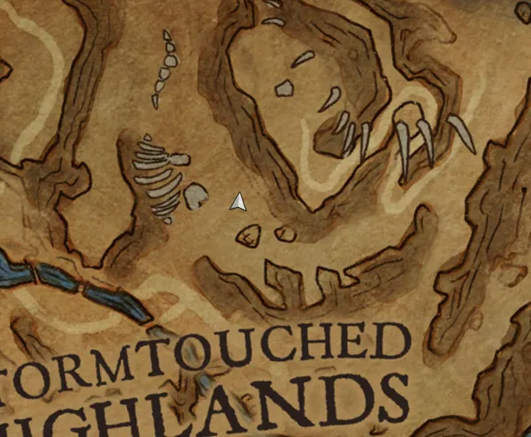
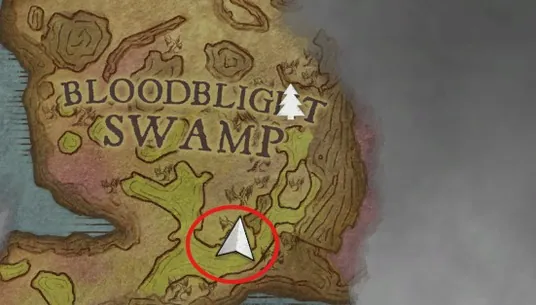

Animal Magnetism is a secondary quest in the Fractured Plains. To start the quest, players must speak to Manktongue, who is located in a ruined house in the south western part of the Fractured Plains.
Overview
- Weak antipoison potion to travel through the Bloodblight Swamp
Walkthrough




Gathering the ingredients
To begin the quest, speak to Manktongue in the cabin in Fractured Plains. He will tell you about an Advert-Inna-Bottle that he found in the water.
Read the message in the bottle on the table behind him to discover instructions from Ava for crafting Ava's Accumulator.
After reading the message, you MUST speak to Manktongue again or you will not be able to collect the ingredients he asks for. He will ask you to gather the ingredients needed to construct the device. This second conversation is required before you can collect the quest items.
You will need:
- 1 Undead chicken
- 1 Bundle of undead twigs
- 1 Magnet, made using:
- 1 Iron bar
- 5 Law runes
Obtaining the undead chicken
The undead chicken is located in Stormtouched Highlands, directly north of Manktongue's cabin.
Enter Stormtouched Highlands and follow the path uphill. Look for an Iron ore node embedded in the rock wall. The undead chicken can be found protruding from the deposit.
Interact with the chicken to collect it.
Note: If you can examine the chicken but cannot collect it, return to Manktongue and make sure you have spoken to him again after reading the message in the bottle.
Obtaining the undead twigs
The Undead tree is located south of the entrance to Bloodblight Swamp.
Find the tree and interact with it to obtain the Bundle of undead twigs.
Warning: An abyssal demon patrols this area. Be cautious when approaching the tree.
Obtaining the magnet
Return to the cabin where you met Manktongue and head upstairs to find Pulpknuckle.
Speak to him while carrying 1 Iron bar and 5 Law runes. He will use these materials to create the Magnet needed for the quest.
Finishing the quest
Once you have obtained the Undead chicken, Bundle of undead twigs, and Magnet, return to Manktongue.
Speak to him and provide the collected ingredients. He will use them to construct Ava's Accumulator, completing the quest.
Congratulations, quest complete!
Rewards
- Ava's accumulator and the ability to create more.
Trivia
- This quest is named after the RuneScape and Old School RuneScape quest of the same same name. Just like the quest, it almost shares the same plot, however Ava is not present.
- It is revealed in the quest that Ava placed instructions for constructing her accumulator inside a bottle and set it adrift at sea, hoping that someone would discover her invention.
This guide is the wiki's Animal Magnetism article, by its editors, reformatted for this site. Licensed CC BY-NC-SA 3.0.